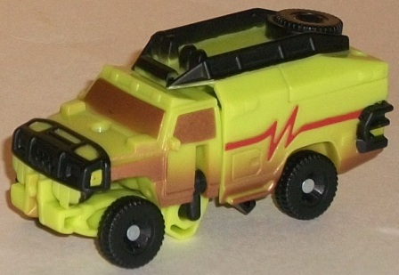
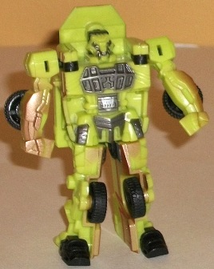
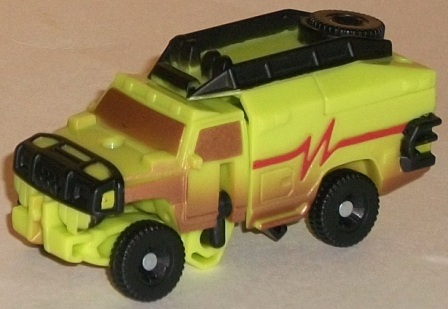
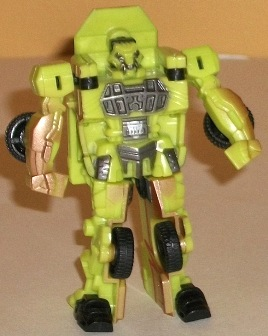
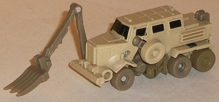
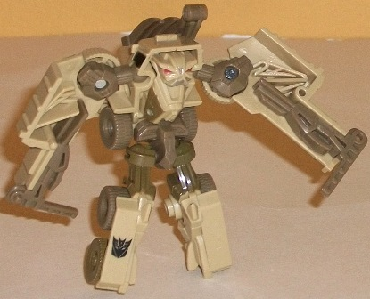
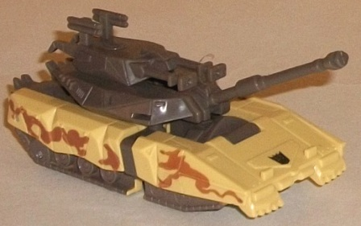
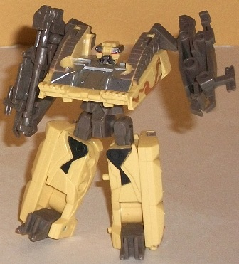
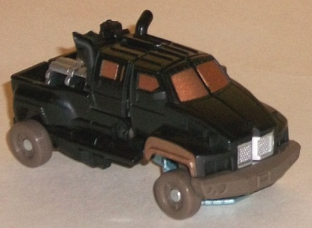
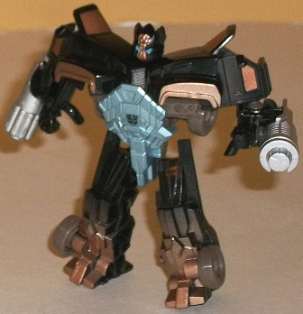

 
Allegiance : Autobot
Size : Legend
Difficulty of Transformation : Very Easy
Color Scheme : Black, light pea green, metallic bronze, and some red and metallic gunmetal gray
Individual Rating : 4.8
Set Price
: $16 U.S.
Overall Rating
: 6.9
(NOTE: Because this set is composed of repaints,
this is not a full-blown review. This mainly covers any changes made to
the set and the color scheme, and merely compares it to the original versions
of these molds. For a review on the original TF1 Legends Autobot Ratchet
mold, go
here
. For a review on the original
TF1 Legends Bonecrusher mold, go
here
.
For a review on the original TF1 Legends Decepticon Brawl mold, go
here
.
For a review on the original TF1 Legends Ironhide mold, go
here
.)
 Autobot
Ratchet
Autobot
Ratchet


Allegiance
: Autobot
Size
: Legend
Difficulty of Transformation
: Very
Easy
Color Scheme
: Black, light pea green,
metallic bronze, and some red and metallic gunmetal gray
Individual Rating
: 4.8
This "redeco" of Ratchet
is pretty much the same as his movie-accurate deco in terms of its general
paint job-- the light pea-yellow green and black are all in the right spots,
and a rather nice shade of metallic gunmetal gray is painted on some of
his robot parts, such as his chest and face. He also still has that red
"heartbeat" symbol painted on his vehicle sides. The major difference for
this version fits in with the whole "Desert Decimation" theme of the boxset--
he's got a "sandy" spray paint app along the bottom of this mode in the
shade of a really nice-looking metallic copper. This color is also used
for Ratchet's windows too, and looks good there as well, making it look
as if his windows are dirty. It also contrasts quite well with the black
and light green-- I'm definitely glad they went with a metallic copper
here as opposed to a pale tan like on some other "sand spray" decos.
No mold changes have
been made to this version of Ratchet.
 Bonecrusher
Bonecrusher


Allegiance:
Decepticon
Size
: Legend
Difficulty of Transformation:
Very
Easy
Color Scheme
: Pale tan, moderately
light muddy brown, and some black, silver, and red
Individual Rating
: 7.6
This version of Bonecrusher
is more of a variant than an outright redeco. His major color of pale tan
is still there, and a darker (but still fairly light) brown color of plastic
has been added, to help give him a least a little color contrast. It works
better in robot mode in particular, and though he's still pretty one-tone,
helps visually separate his parts a bit more. In robot mode, the gold from
his head is unfortunately gone, replaced with a bit of silver around the
mouth and brown on the sides of his chest. I'm of mixed feelings about
this change-- on the one hand, there's more paint apps, but on the other,
the gold on the initial release of this mold looked pretty nice. His windows
in vehicle mode are also now black instead of a light metallic silvery
blue, a change that I'm totally indifferent about.
No mold changes have
been made to this version of Bonecrusher.
 Decepticon
Brawl
Decepticon
Brawl


Allegiance
: Decepticon
Size
: Legend
Difficulty of Transformation
: Very
Easy
Color Scheme
: Yellowish tan, dark
brownish gray, and some silver, red, black, and muddy brown
Individual Rating
: 7.8
Brawl is the only one
in the set that has an entirely different color scheme compared to his
predecessors-- and, fittingly, it's desert-themed. A sandy yellowish tan
serves as the main color, with a dark brownish gray serving to contrast
against it. Both are shades of color you'd find commonly in a desert, and
they contrast well off each other, but the brownish gray by itself is pretty
dull-looking. When it's used on small areas like the treads or the upper
robot legs it doesn't matter much, but on big areas like the tank turret?
Yeah, Brawl definitely could've used some more paint apps there to spice
things up a bit. Brawl has a few muddy brown camo paint apps along the
sides of his tank mode to help make him pop a little more, and it does
help some in that respect, but honestly paint apps on the dark brown would've
helped even more. In robot mode he's got a pretty good color mix, though,
with most of his chest painted a nice metallic shade of silver, and some
cool detailed paint apps on his face and upper legs.
No mold changes have
been made to this version of Brawl.
 Ironhide
Ironhide


Allegiance
: Autobot
Size
: Legend
Difficulty of Transformation
: Very
Easy
Color Scheme
: Black, light metallic
silvery blue, metallic bronze, and some silver, light sky blue, and dull
muddy brown
Individual Rating
: 7.2
Like this set's Ratchet,
Ironhide's colors this time around are largely the same (his black and
silver, namely) but with some "desert-y" paint apps added. Just like Ratchet,
he's got a pretty cool metallic bronze paint added to his windows and,
in robot mode, a spray paint app of it on the bottoms of his feet-- made
to look like sand, of course. The color of plastic for his tires and some
of his connecting robot bits is also now a dull muddy brown, which serves
as some more needed contrast against all that black in Ironhide's color
scheme, even if it itself is hardly the most exciting of colors. There's
also a bit more metallic silvery blue paint on Ironhide's chest this time
around, which is always good. The only added paint apps I'm not crazy about
are the bronze paint apps going down the middle of his face-- they highlight
what is already weak, odd-looking mold detailing, and I'm not fond of that.
The sky blue eyes look great, though.
No mold changes have
been made to this version of Ironhide.
The "Desert Decimation"
set is a difficult recommendation to make, in spite of its cheap price.
It's a secondary & online retailer exclusive, first off, so it's not
the easiest to get. These molds have also been released several times before,
so chances are that if you're interested in them, you've already gotten
them by the time this set came out. Most of the color schemes-- although
decent enough-- are barely different, with the obvious exception of Brawl.
So, if you want these molds and either don't have any of them or only have
the Brawl mold, this is a set worth searching for. Otherwise, it's a pretty
easy pass.
Reviews by Beastbot